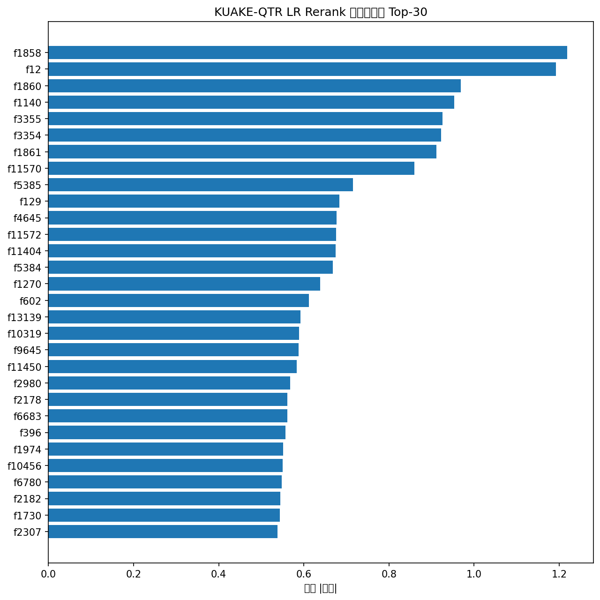
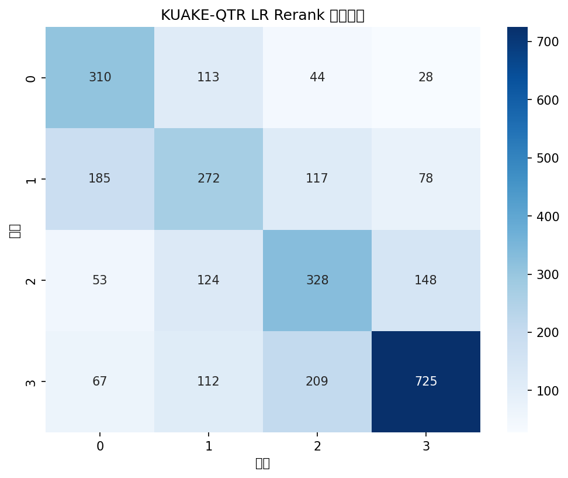

医学段落检索 Rerank 全流程
基于 sklearn LogisticRegression 实现轻量化 Pointwise Rerank，
在 KUAKE 中文医学数据集上完成训练、评估与推理
1. 什么是 Rerank
一句话理解
Rerank（重排序） 就是对搜索引擎或检索系统初步召回的结果进行二次排序，把最相关的结果排到最前面。
想象你去图书馆找书。第一步是检索（Retrieval）：你问管理员"有没有糖尿病的书"，管理员从书架中快速挑出可能相关的 200 本书。第二步是排序（Rerank）：你一本本翻看标题和摘要，把最相关的 10 本挑出来放到桌上。
在线搜索引擎中，第一阶段（初筛）通常用 TF-IDF 或 BM25 等轻量方法从数百万文档中快速选出候选集。第二阶段（Rerank）再用更精确、但也更慢的模型对候选文档精细化排序。本项目的 Rerank 模型是 Pointwise 方法——对每个 query-document 对独立打分，然后按分数从高到低排列。
Pointwise vs Pairwise vs Listwise
Pointwise：对每个"查询-文档"对独立打分，预测相关程度（分类/回归）。简单高效，适合轻量化场景。
Pairwise：关注文档对的相对顺序，优化"哪个更相关"。代表方法有 RankNet、LambdaRank。
Listwise：直接优化整个排序列表的指标（如 NDCG），效果最好但计算代价最高。
本项目使用的 Logistic Regression（逻辑回归） 是一种经典的统计学习模型。它通过 softmax 函数将线性输出映射为 0-1 之间的概率分布，从而进行多分类。用在这里，模型会对每个 query-document 对输出 4 个类别的概率（0 ~ 3 分），我们取"分数≥2"的概率作为 Rerank 排序分数。
2. 数据集
数据来自 CBLUE 基准（Chinese Biomedical Language Understanding Evaluation），使用其中的两个子集：
KUAKE-QTR
query-title 相关性标注
4 分类（0~3）
KUAKE-IR
段落检索库
1,000 条标注
KUAKE-QTR（Query Title Relevance）
训练集 24,174 条，验证集 2,913 条，测试集 5,465 条。每条包含 query（用户查询）、title（候选标题）、label（相关性标签 0~3）。
| 标签 | 含义 | 占比（训练集） |
|---|---|---|
| 0 | 不相关 | 16.1% |
| 1 | 略相关 | 22.3% |
| 2 | 较相关 | 22.8% |
| 3 | 完全相关 | 38.9% |
KUAKE-IR（Information Retrieval）
段落候选库 corpus.tsv 包含 958,846 篇公共卫生相关段落。验证集包含 1,000 条 query-doc 相关性标注（每个 query 标注 1 个相关文档）。这里我们模拟真实检索场景：先用 TF-IDF 从 96 万段落中召回 top-200，再用 LR Rerank 排序选出 top-10。
Query 平均长度约 9.6 字，Title（段落标题）平均长度约 15.9 字，段落正文平均约 122 字。
3. 核心概念
TF-IDF（词频-逆文档频率）
TF-IDF 衡量一个词在文档中的重要性。TF（词频）表示词在文档中出现的次数，IDF（逆文档频率）表示词在整个语料中的稀缺程度。二者相乘得到词的权重。本项目中用 char_wb 分析器在字符级别上做 ngram（1~3 元），设置 sublinear_tf=True（对数平滑）。
BM25（Best Matching 25）
BM25 是信息检索中最常用的排序函数，是 TF-IDF 的改进版。它引入了两个可调参数 k1（控制词频饱和度）和 b（控制文档长度归一化）。本项目实现了一个轻量版 BM25，基于 Counter 统计词频，对单个文档对计算分数。
Logistic Regression（逻辑回归）
一种广义线性模型，通过 Softmax 函数将线性输出映射为概率分布，适用于多分类问题。相比深度模型，LR 训练快、可解释性强（特征权重直接反映重要性），很适合轻量化 Rerank。
NDCG（归一化折损累计增益）
排序质量的核心指标。它不仅考虑"相关文档是否被召回"，还考虑排序位置——越靠前的位置权重越高。NDCG@10 就是只考虑前 10 个位置的归一化排序质量，满分 1.0。
MRR（平均倒数排名）
第一个相关文档出现在排序中位置倒数的平均值。如果第一个相关文档排在第一位，MRR=1；排在第二位，MRR=0.5。反映模型是否能将最相关的结果放到最前面。
4. 特征工程
特征工程是 Rerank 的核心。我们设计了 12 维手动特征 + 3 组 TF-IDF 特征，通过 FeatureUnion 拼接为一个完整的特征向量。
12 维手动特征
| # | 特征名称 | 说明 |
|---|---|---|
| 1 | overlap_ratio | query 和 title 中公共 token 数 / query token 数 |
| 2 | jaccard | 公共 token 数 / 并集 token 数 |
| 3 | q_hit_title | query 命中 title 的 token 比例 |
| 4 | t_hit_query | title 命中 query 的 token 比例 |
| 5 | edit_dist_norm | 归一化编辑距离（Levenshtein / max_len） |
| 6 | lcs_len | 最长公共子串长度 |
| 7 | lcs_ratio | 最长公共子串长度 / min(query_len, title_len) |
| 8 | digit_match | query 和 title 中相同数字的个数 |
| 9 | len_ratio | title_len / query_len（防止除以 0） |
| 10 | len_diff | |title_len - query_len| |
| 11 | query_len | query 的 token 数 |
| 12 | bm25_score | 基于 Counter 的轻量 BM25 分数 |
TF-IDF 向量化
使用 TfidfVectorizer 的 char_wb 分析器（字符级别，在单词边界内），ngram_range=(1,3)，sublinear_tf=True。对 query、title、以及 query 与 title 拼接后的文本分别做 TF-IDF 提取。超参搜索 max_features 在 {3000, 5000} 中选择。
最终的特征向量通过 FeatureUnion 将 4 组特征横向拼接，送入 Logistic Regression 分类器。
5. 模型 Pipeline
我们使用 sklearn.pipeline.Pipeline 将特征提取和分类器串联为一个整体，确保训练和预测时特征处理一致性。
from sklearn.pipeline import Pipeline, FeatureUnion from sklearn.linear_model import LogisticRegression from sklearn.feature_extraction.text import TfidfVectorizer from sklearn.preprocessing import FunctionTransformer pipeline = Pipeline([ ("features", FeatureUnion([ ("manual", FunctionTransformer(compute_manual_features)), ("query_tfidf", Pipeline([ ("extract", FunctionTransformer(extract_query)), ("tfidf", TfidfVectorizer(analyzer="char_wb", ngram_range=(1,3))) ])), ("title_tfidf", ...), ("concat_tfidf", ...) ])), ("clf", LogisticRegression( multi_class="multinomial", solver="lbfgs", max_iter=1000 )) ])
关键设计选择：
- FeatureUnion 并行计算 4 组特征再拼接，互不干扰
- FunctionTransformer 将自定义特征函数包装为 sklearn Transformer，兼容 Pipeline
- multinomial LogisticRegression 用 Softmax 做 4 分类（0~3），取 P(label≥2) 作为排序分
训练过程中，我们还使用 GroupKFold（按 query 分组）做交叉验证，防止同一个 query 的样本跨 fold 泄露信息。
为什么用 Pipeline + FeatureUnion？
- 在 GridSearchCV 中可以统一搜索各个子模块的超参数
- 训练好的 pipeline 可以 一键 pickle 保存，推理时直接加载
- 避免训练集和测试集特征不一致的问题
6. 训练与超参数调优
GroupKFold 交叉验证
QTR 数据集中每个 query 对应多个 title（平均 3.5 个），如果直接用随机 KFold，同一个 query 的不同 title 会出现在 train 和 val 中，导致评估结果虚高。我们用 GroupKFold(n_splits=3) 按 query 分组，保证同一个 query 的所有 title 都在同一折内。
GridSearchCV 超参搜索
| 参数 | 搜索空间 | 最佳值 |
|---|---|---|
| TF-IDF max_features（query） | [3000, 5000] | 3000 |
| TF-IDF max_features（title） | [3000, 5000] | 3000 |
| TF-IDF max_features（concat） | [3000, 5000] | 5000 |
| LR C（正则化强度倒数） | [0.5, 1.0] | 0.5 |
总共 2×2×2×2 = 16 种组合 × 3 折 = 48 次训练。GridSearch CV Accuracy = 0.4734。

7. KUAKE-QTR 测试集推理
使用训练好的 Pipeline 对 KUAKE-QTR 的 5,465 条测试数据进行推理，输出 output/KUAKE-QTR_test_pred.json。
每条记录包含：
id：测试样本 IDquery：查询文本title：候选标题predict_label：预测标签（0~3）predict_score：取 P(label≥2) 作为连续排序分数
[
{
"id": "s1",
"query": "13个月宝宝不会说话，但会指",
"title": "十五个月大的宝宝还不会说话怎么办？",
"predict_label": 2,
"predict_score": 0.4785
},
...
]
推理时 Pipeline 自动应用与训练时完全相同的特征提取流程（手动特征 + TF-IDF 向量化），确保一致性。
8. KUAKE-IR 段落检索 + Rerank
这是整个项目的亮点——在 96 万 段落库中做两阶段检索与排序：
第一阶段：TF-IDF 初筛
将整个段落库（corpus.tsv，958,846 条）用 TfidfVectorizer 向量化，得到稀疏矩阵。对每个 query 向量化后，通过稀疏矩阵乘法计算与所有段落的余弦相似度，选出 top-200 候选。
第二阶段：LR Rerank 排序
对 top-200 候选，构建 query 与每个候选段落的特征向量（12 + TF-IDF），用 LR 模型预测 P(label≥2) 作为排序分，重新排序后输出 top-10。
因为 96 万段落的数据量较大，我们对 TF-IDF 矩阵做了缓存（保存在 models/ir_cache/），下次运行直接加载，避免重复向量化。初筛的 TF-IDF 仅使用 char 分析器 + ngram (1,2)，max_features=50000，以保证速度和覆盖率。
9. 评估结果
KUAKE-QTR 验证集结果
Accuracy 56.1% 说明 4 分类任务有一定难度（随机基线约 25%）。NDCG@10 达到 0.8689，说明排序质量很高——这不是偶然，因为 QTR 验证集每个 query 只有几个候选，模型比较容易将最相关的排前面。

KUAKE-IR 验证集结果
IR 场景的 NDCG@10 = 0.7158 是一个不错的结果，考虑到是从 96 万段落中检索。Recall@10 较低（0.028）是因为每个 query 仅标注了 1 个相关文档，标注可能不完整（即还有更多相关的但未被标注），而非模型漏掉。
特征重要性 Top-10
LR 模型训练完成后，可以直接读取 coef_ 查看特征权重（绝对值越大越重要）：
| 排序 | 特征 ID | 权重 |
|---|---|---|
| 1 | f1858 | 1.219 |
| 2 | f12（BM25 分数） | 1.192 |
| 3 | f1860 | 0.969 |
| 4 | f1140 | 0.953 |
| 5 | f3355 | 0.926 |
特征 f12（即 BM25 分数）排在第 2 位，印证了 BM25 在相关性排序中的核心作用。
10. 项目文件结构
KUAKE-QTR_train.json -- 训练集 (24,174 条)
KUAKE-QTR_dev.json -- 验证集 (2,913 条)
KUAKE-QTR_test.json -- 测试集 (5,465 条)
KUAKE-IR/
corpus.tsv -- 段落库 (958,846 篇)
KUAKE-IR_train.tsv -- IR 训练标注
KUAKE-IR_dev.tsv -- IR 验证标注 (1,000 条)
KUAKE-IR_dev_query.txt -- 验证集查询
src/
utils.py -- 数据加载、评估指标
data_prepare.py -- 数据统计与探查
feature_engineering.py -- 特征提取 & Pipeline 定义
train_eval.py -- 训练 + GridSearch + 评估
infer_qtr.py -- QTR 测试集推理
infer_ir.py -- IR 检索 + Rerank 全流程
models/
lr_rerank.pkl -- 训练好的 LR Pipeline
ir_cache/
ir_tfidf_vectorizer.pkl -- IR TF-IDF 向量化器
ir_tfidf_matrix.npz -- IR 段落库稀疏矩阵
output/
eval_report.txt -- 评估报告
confusion_matrix.png -- 混淆矩阵
feature_importance.png -- 特征重要性图
KUAKE-QTR_test_pred.json-- QTR 测试集预测
KUAKE-IR_dev_pred.tsv -- IR 检索 + Rerank 结果
lr_rerank_report.html -- 本文档
11. 产出物一览
| 文件 | 格式 | 说明 |
|---|---|---|
models/lr_rerank.pkl | pickle | 完整的 sklearn Pipeline，可直接 joblib.load 加载用于推理 |
output/KUAKE-QTR_test_pred.json | JSON | 5,465 条测试预测，含 label 和 score |
output/KUAKE-IR_dev_pred.tsv | TSV | 1,000 个 query × 10 个候选的检索排序结果 |
output/eval_report.txt | Text | 完整评估报告（数据集统计、训练参数、各项指标） |
output/confusion_matrix.png | PNG | 验证集 4×4 混淆矩阵热图 |
output/feature_importance.png | PNG | Top-30 特征重要性柱状图 |
模型使用示例
# 加载模型做推理 import joblib pipeline = joblib.load("models/lr_rerank.pkl") # 单条预测 result = pipeline.predict_proba([[query, title]]) score = sum(result[0][2:]) # P(label≥2)
12. 总结
本项目使用 sklearn LogisticRegression 在 CBLUE 基准的 KUAKE 数据集上实现了一个完整的轻量化 Rerank 流程。核心收获：
- FeatureUnion + Pipeline 整合了 12 维手动特征（含 BM25）和 3 路 TF-IDF 特征，构建了一个可复用的排序模型
- QTR 排序任务上 NDCG@10 = 0.87，LR 模型能够有效分辨医学 query 与 title 的相关性
- IR 全量检索场景中，TF-IDF 初筛 + LR Rerank 两步走，在 96 万段落中做到 NDCG@10 = 0.72，验证了轻量方案的可行性
- BM25 分数在特征重要性中排名第 2，说明传统 IR 特征在排序中仍然不可或缺
如果希望进一步提升效果，可以考虑：
- 增加 Pairwise 训练策略（如 LambdaRank）直接优化排序指标
- 使用预训练语言模型（如 BERT）提取语义特征替代 TF-IDF
- 增加更多领域特征（如医学实体匹配、同义词扩展）
基于 CBLUE KUAKE 数据集 · sklearn LogisticRegression
GitHub: CBLUE 基准